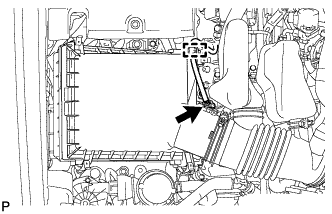
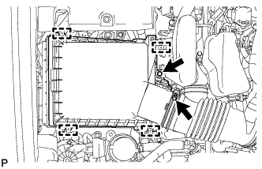
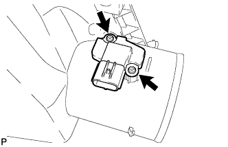

MASS AIR FLOW METER > REMOVAL |
| 1. REMOVE AIR CLEANER CAP SUB-ASSEMBLY |
|  |
Detach the clamp and disconnect the mass air flow meter connector.
|  |
Loosen the hose clamp.
Detach the 4 clips and remove the bolt and air cleaner cap.
| 2. REMOVE MASS AIR FLOW METER ASSEMBLY |
|  |
Remove the 2 screws and mass air flow meter.